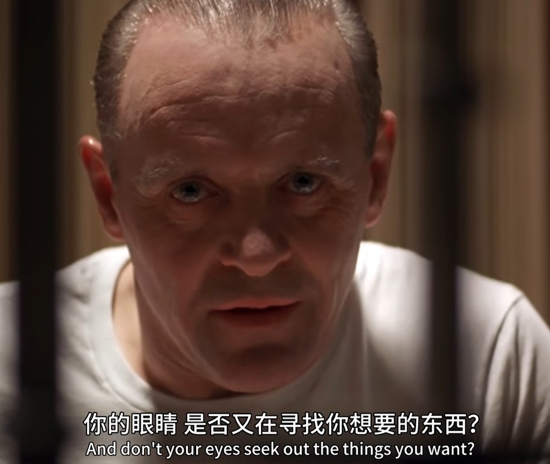

突然想起“贪图”的问题。
基于从小对法医学和刑侦学的个人爱好，对因果的好奇和探索几乎在我的思维里根深蒂固；这个时候就得说一下我的低情商了，一般有人找我哭诉，我都先想搞懂“为什么”才会想办法安慰。
水牛比尔“贪图”着什么，所以犯下常人无法理解的罪行，而“你的眼睛，是否又在寻找你想要的东西”？

基于从小对法医学和刑侦学的个人爱好，对因果的好奇和探索几乎在我的思维里根深蒂固；这个时候就得说一下我的低情商了，一般有人找我哭诉，我都先想搞懂“为什么”才会想办法安慰。
水牛比尔“贪图”着什么，所以犯下常人无法理解的罪行，而“你的眼睛，是否又在寻找你想要的东西”？

甲鱼不正经影评19
《沉默的羔羊》
高中的时候看了小说和电影，这次和entp一起看是二刷。
看到了更多没有注意到的细节，电影名场面太多反而不知道该抉择截什么图，最后选择了这张。
“那些羔羊停止尖叫了吗？”
一旦羔羊停止尖叫，也意味着某种变成蝴蝶的转变吗？圣母的使命会完满地结束吗？ https://t.co/lKcR8o6NAr
《沉默的羔羊》
高中的时候看了小说和电影，这次和entp一起看是二刷。
看到了更多没有注意到的细节，电影名场面太多反而不知道该抉择截什么图，最后选择了这张。
“那些羔羊停止尖叫了吗？”
一旦羔羊停止尖叫，也意味着某种变成蝴蝶的转变吗？圣母的使命会完满地结束吗？ https://t.co/lKcR8o6NAr